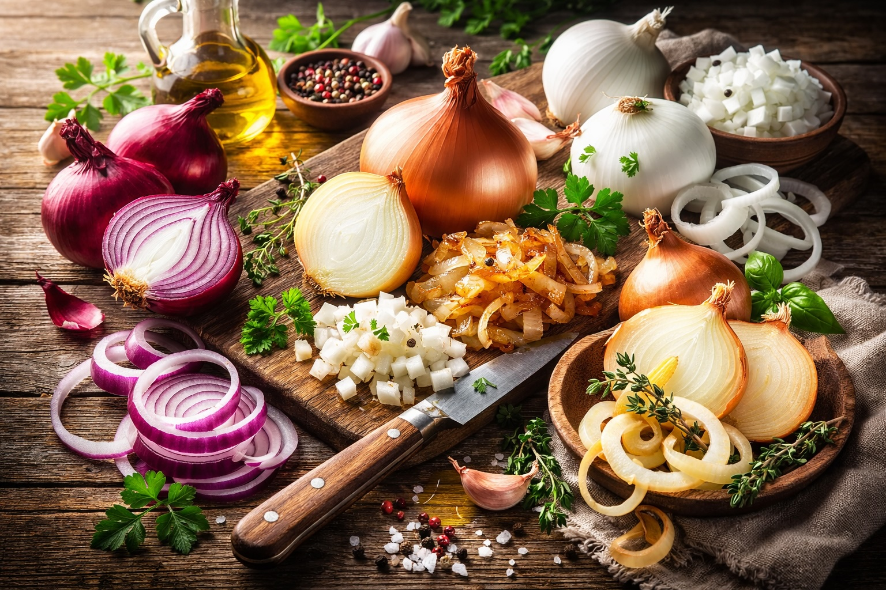

Superfoods: Onions
Last updated: March 18, 2026

- Onions build flavor naturally: they help reduce dependence on processed sauces and flavor enhancers.
- They are highly versatile: useful in breakfast, lunch, dinner, soups, rice dishes, and protein cooking.
- Yellow onions are the best all-purpose choice: they offer the best balance of cost, versatility, and flavor.
- Small additions compound: even a small amount of onion can make food feel more complete and satisfying.
Purpose: Onions are one of the most widely used ingredients in cooking across cultures, yet they are often overlooked as a foundational food. Whether used raw, sautéed, or caramelized, onions add flavor, depth, and nutritional value that elevate nearly any dish.
Why onions matter
Onions are a core ingredient in cuisines all over the world because they create flavor in a direct and natural way. Instead of relying on bottled sauces or processed seasonings, onions help build depth from the beginning of the cooking process. This makes them one of the most practical ingredients in a whole-food kitchen.
Nutritional value
Onions provide vitamin C, fiber, antioxidants, and sulfur-containing compounds associated with immune and cardiovascular support. They are low in calories, inexpensive, widely available, and easy to use regularly. Their value comes not only from nutrient density, but also from how often they can be incorporated into everyday meals.
Flavor impact
One of the most important benefits of onions is how much they improve food with very little effort. Raw onions bring brightness and bite. Sautéed onions become softer and sweeter. Caramelized onions create deep, rich flavor. In practical cooking, onions often make the difference between food tasting flat and food tasting complete.
Cooking versatility
Onions can be used in nearly every style of cooking. They work in omelets, quinoa, soups, rice dishes, sautéed vegetables, meat dishes, and stews. They also pair naturally with other foundational ingredients such as garlic, olive oil, butter, and herbs. This makes them one of the most efficient ingredients for improving meals at home.
Types of onions: benefits and best uses
Yellow onions
The best all-purpose onion. They become sweet and balanced when cooked and work well in soups, rice dishes, sautés, roasted meals, and cast iron cooking.
- Best for: soups, quinoa, rice dishes, omelets, general cooking
- Pros: most versatile, inexpensive, excellent for building flavor
- Cons: less appealing raw than red onion, not as naturally sweet as sweet onions
Red onions
Sharper and brighter than yellow onions, especially when raw. Best for fresh uses or dishes where onion flavor should stand out more clearly.
- Best for: salads, sandwiches, toppings, pickling, some quick sautés
- Pros: attractive color, better raw flavor, adds brightness and bite
- Cons: can be too sharp in some cooked dishes, less ideal as an everyday base onion
White onions
Cleaner and slightly sharper than yellow onions. Common in Latin cooking, salsas, and dishes where a lighter onion flavor is preferred.
- Best for: tacos, salsas, Latin dishes, stir fries, quick cooking
- Pros: crisp, clean flavor, good in both raw and cooked applications
- Cons: less depth than yellow onions for slow cooking, can feel harsher raw
Sweet onions
Milder and naturally sweeter, with less bite. Good for people who want onion flavor without the sharper edge of yellow or white onions.
- Best for: roasting, caramelizing, burgers, oven dishes
- Pros: milder flavor, easier for people who dislike strong onions, very good when cooked slowly
- Cons: less flavor depth in savory dishes, can be too mild for recipes that rely on onions as a flavor base
If only one type of onion is kept in the kitchen, yellow onions are the best choice because they offer the strongest balance of flavor, versatility, cost, and everyday usefulness.
Whole food advantage
Many processed sauces and flavor systems attempt to imitate what onions naturally provide: sweetness, depth, aromatic complexity, and savory balance. Using onions directly helps reduce dependence on packaged flavor boosters and supports the broader principle that whole ingredients create flavor naturally while processed ingredients try to imitate it.
How to use onions more often
Use onions as part of the base layer of cooking. Chop them finely for fast dishes, such as omelets or rice bowls. Use slightly larger pieces for soups or stews. Cook them in oil or butter over medium heat until translucent or lightly golden. Pairing onions with garlic is one of the fastest ways to improve the overall flavor of a dish.
Cost efficiency
Onions are one of the highest-value ingredients in the kitchen. They are inexpensive, store well, and improve many different meals. This makes them not only a superfood in nutritional terms, but also a practical foundation ingredient for resilience, budget-conscious cooking, and whole-food meal building.
Personal note
Onions have become a consistent part of my cooking process. Adding them to dishes like eggs, quinoa, and rice has noticeably improved flavor without relying on sauces or processed ingredients. Over time, they have made meals feel more complete, more satisfying, and more naturally flavorful.
Next steps
Continue with other Superfoods articles.
This article focuses on general food quality and metabolic resilience, not medical advice.